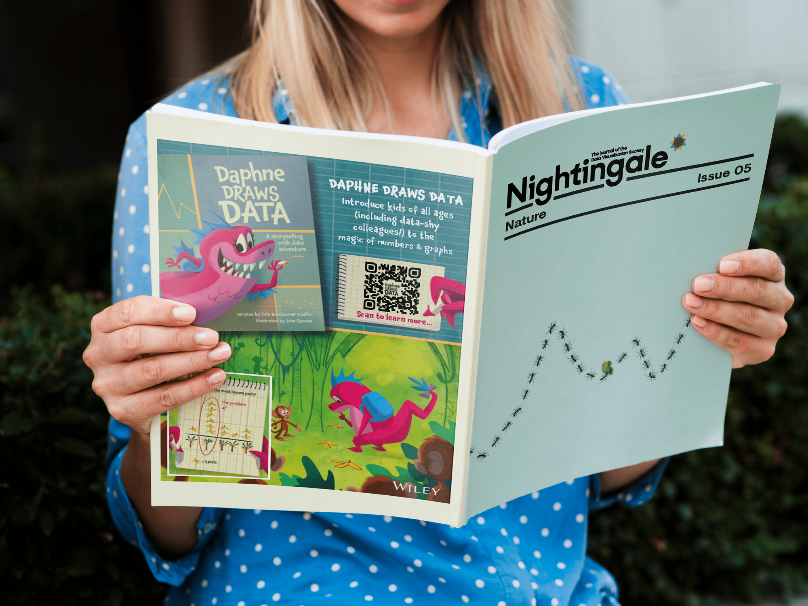

Nightingale Issue 5: Nature
As the Managing Editor of Nightingale, the Journal of the Data Visualization Society, I worked alongside our core editorial team to produce the fifth print issue of Nightingale.
My primary responsibility was copyediting, providing consult and guidance to our contributors to ensure their best voice was being printed.
You can purchase this issue here.
About Issue 5
Nature shapes our world in countless ways, from the beauty of trees and butterflies to the complexity of human society. This issue of Nightingale magazine explores these diverse facets, revealing how data visualization uncovers the hidden rhythms of our planet and the interconnectedness of our communities. Packed with insights on the natural influences that guide our lives and reflections on societal structures, this edition also includes a special section on sustainability. Dive into the fascinating world of nature with Nightingale—this issue promises to be a breath of fresh air!
Additional Credits: Jason Forrest, Teo Popescu, Alejandra Arevalo, Julie Brunet
